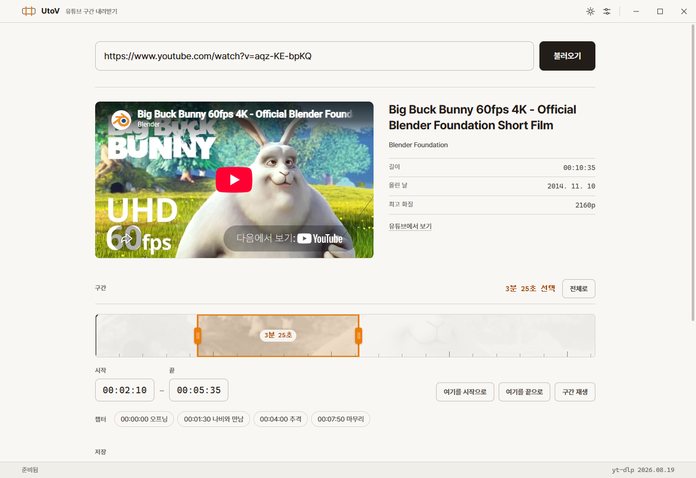
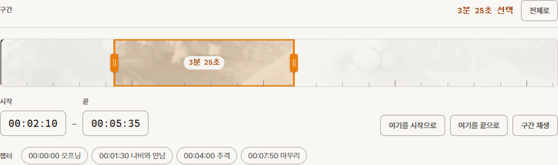
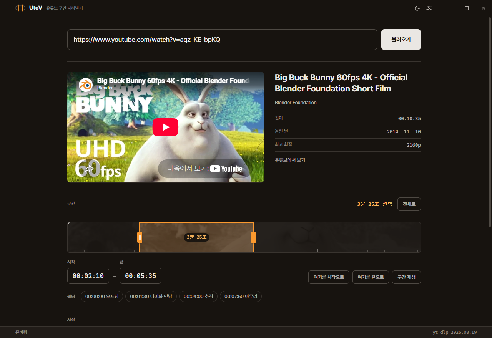

윈도우용 · 무료 · 설치 없이 실행
영상 전체가 아니라,
필요한 구간만.
유튜브 주소를 넣고 시작과 끝을 집으면 그 부분만 내려받습니다. 수업에서 쓸 3분을 위해 40분을 통째로 받을 이유가 없습니다.

전체를 받아서 잘라내는 것이 아닙니다.
지정한 시각의 조각만 골라 받고, 그 자리에서 프레임 단위로 맞춰 잘라냅니다. 받는 양이 줄어드니 기다리는 시간도 줄고, 디스크도 덜 씁니다.
하는 일
필요한 만큼만, 정확하게
-
01
구간만 내려받기
시작과 끝을 정하면 그 사이만 받습니다. 초 단위로 맞춰 잘라내므로 앞뒤에 군더더기가 붙지 않습니다.
-
02
보면서 고르기
창 안에서 영상을 재생하다가 원하는 지점에서 "여기를 시작으로"를 누르면 됩니다. 챕터가 있는 영상은 챕터를 눌러 한 번에 잡습니다.
-
03
영상 또는 소리
MP4로 받거나 MP3로 소리만 뽑아냅니다. 화질은 가장 좋은 화질부터 360p까지 고를 수 있습니다.
-
04
자막까지
자막을 .srt 파일로 따로 받거나 영상 안에 넣을 수 있습니다. 한국어와 영어 자막을 찾아 담습니다.
쓰는 법
세 번이면 끝납니다
주소 붙여 넣기
유튜브에서 영상 주소를 복사해 넣고 엔터를 누릅니다. 제목과 길이, 챕터를 읽어 옵니다.
구간 집기
트랙의 양쪽 손잡이를 끌거나 시간을 직접 칩니다. 전체를 받으려면 그대로 두면 됩니다.
내려받기
고른 구간만 받아 지정한 폴더에 저장합니다. 진행률과 남은 시간이 보입니다.

화면
밝게도, 어둡게도
교실 프로젝터로 띄울 때와 늦은 밤 준비할 때가 다릅니다. 두 가지 모두 준비했습니다.

내려받기
두 가지 중 하나를 고르세요
처음 실행할 때
윈도우가 "Windows의 PC 보호"라고 알릴 수 있습니다. 서명 인증서를 사지 않은 프로그램이라 나오는 안내입니다. 추가 정보를 누른 뒤 실행을 고르면 됩니다.
첫 실행 때 영상을 받고 잘라내는 데 쓰는 도구 두 가지를 자동으로 내려받습니다. 한 번만 하면 됩니다.
자주 묻는 질문
먼저 나오는 질문들
정말 무료인가요?
네. 값을 받지 않고, 계정을 만들 필요도 없습니다. 소스도 공개되어 있어 무엇을 하는 프로그램인지 직접 확인할 수 있습니다.
맥에서도 되나요?
지금은 윈도우용만 있습니다. 소스는 공개되어 있으니 맥용으로 빌드하는 것은 가능하지만, 아직 만들어 두지는 않았습니다.
어느 날 갑자기 아무것도 안 받아집니다.
유튜브가 내부 구조를 바꾸면 생기는 일입니다. 설정을 열고 yt-dlp 갱신을 누르면 대개 해결됩니다. 이것 때문에 도구를 프로그램 안에 넣지 않고 갱신할 수 있게 만들었습니다.
"사람인지 확인하세요"라는 오류가 납니다.
유튜브가 자동 프로그램인지 의심할 때 나옵니다. 잠시 뒤 다시 시도해 보세요. 계속 같은 메시지가 나오면 로그인이 있어야 볼 수 있는 영상일 수 있습니다.
"요청 속도를 제한했습니다"라는 메시지가 뜹니다.
짧은 시간에 요청이 몰렸다고 유튜브가 판단한 것입니다. 목록에 나타난 천천히 다시를 누르면 한 번에 한 조각씩 쉬어 가며 다시 받습니다. 대부분 이것으로 통과합니다.
이 메시지는 자막을 켰을 때 가장 자주 나옵니다. 유튜브의 자막 창구는 제한이 특히 빡빡해서 연달아 몇 번만 요청해도 막힙니다. 자막을 없음으로 두고 받으면 대개 해결됩니다.
그래도 안 되면 목록의 오류 아래에 실제 오류 내용이 그대로 표시됩니다. 오류 내용 복사를 눌러 알려 주시면 원인을 찾는 데 도움이 됩니다.
학교 컴퓨터에서 느리거나 자꾸 끊깁니다.
설정에서 동시 조각 수를 1이나 3으로 낮춰 보세요. 한 번에 여러 조각을 받으면 빠르지만 학교망에서는 막히는 경우가 있습니다.
구간을 정했는데 앞부분이 조금 더 붙어서 받아집니다.
설정의 지정한 시각에 정확히 맞추기가 꺼져 있을 때 생깁니다. 켜면 정확히 맞춰 잘리고, 끄면 조금 빠른 대신 가까운 지점까지 당겨집니다.
받은 파일이 재생되지 않습니다.
1.2.0 이전 버전에서 받은 파일이라면 영상이 AV1 코덱일 수 있습니다. 윈도우에는 AV1 재생 기능이 기본으로 들어 있지 않아, 파일은 멀쩡해 보여도 열리지 않습니다. 1.2.0 부터는 어디서나 열리는 H.264 로 받으므로 다시 받으시면 됩니다.
1.2.0 부터는 내려받기가 끝나면 파일이 실제로 열리는지, 길이가 맞는지, 흔한 재생기가 다룰 수 있는 코덱인지 확인합니다. 문제가 있으면 목록에 그대로 알려 줍니다.
왜 4K 로는 받을 수 없나요?
유튜브가 1080p 를 넘는 화질에 쓰는 코덱(AV1, VP9)은 윈도우에서 기본으로 재생되지 않습니다. 받아도 열리지 않는 4K 보다 확실히 열리는 1080p 가 낫다고 보아 1080p 까지만 제공합니다. 수업용 화면이나 프로젝터에는 1080p 로 충분합니다.
받은 파일은 어디에 저장되나요?
처음에는 내 비디오 폴더 아래 UtoV 폴더에 저장됩니다. 설정에서 원하는 곳으로 바꿀 수 있고, 다 받은 뒤 폴더 열기를 누르면 바로 열립니다.
내려받기 전에 한 가지
이 프로그램은 도구일 뿐이고, 무엇을 받을지는 쓰는 사람이 정합니다. 저작권이 있는 영상을 권리자의 허락 없이 받아서 퍼뜨리는 것은 저작권법에 어긋날 수 있습니다.
수업 목적이라도 「저작권법」 제25조가 정한 범위 안인지 확인해 주세요. 가능하면 저작권자가 이용을 허락한 영상을 쓰시기를 권합니다.